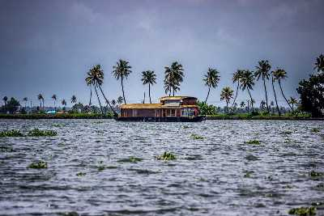

ALAPPUZHA
Alappuzha (or Alleppey) is a city on the Laccadive Sea in the southern Indian state of Kerala. It's best known for houseboat cruises along the rustic Kerala backwaters, a network of tranquil canals and lagoons. Alappuzha Beach is the site of the 19th-century Alappuzha Lighthouse. The city's Mullakkal Temple features a traditional design. Punnamada Lake's snake boat races are a well-known annual event.

Krishnapuram Palace

The Krishnapuram Palace is a palace and museum that is located in Kayamkulam, at a distance of 47 km from Alappuzha. This magnificent palace was built during the reign of a Travancore King, Anizham Thirunal Marthanda Varma and is well known for its mural paintings and architecture. The palace is built in the traditional architectural style of Kerala, with a gabled roof, narrow corridors and dormer windows, and is close to the Krishnaswamy Temple at Krishnapuram.
A major attraction of this place is that it houses is one of the biggest mural paintings that can be found in all of Kerala. Known as the 'Gajendra Moksha', this mural painting covers an area of around 53 square feet and has a rich historical value attached to it. The double-edged sword Kayamkulam Vaal can also be found here. The Krishnapuram Palace is currently maintained by the Archaeological Department of Kerala and contains a variety of exhibits that once belonged to the Palace and its former occupant.
Readmore
Vembanad Lake

Vembanad Lake is a lagoon located in the district of Alleppey in the South-Indian state of Kerala. This expansive lake/ lagoon is longest lake in the country and the largest Lake in Kerala, accessible from Kottayam, Kuttanad and Kochi. Vembanad Lake is known by different names in different regions of Kerala. It is called the Kochi Lake in Kochi, the Punnamada Lake in Kuttanad and as Vembanad in Kottayam. Locals also call it Vembanad Kol or Vembanad Kayal.
Readmore
Backwaters in Alleppey

The Alleppey backwaters was earlier used as a mode of transportation, fishing and agriculture and have evolved over time as a tourism hotspot. The main attraction of the Alleppey backwaters is the overnight journey in the famous Kerala houseboats. These houseboats are as comfortable as any hotel room - sometimes even more luxurious, and as a bonus, you get the open deck.
Sunset viewing, bird watching, village visits, stargazing, witnessing the everyday life of the farmers and fishermen along with visiting the various regions that specialise in the manufacture of certain products like toddy, coir, handicrafts - Alleppey is a handful of an experience to have.
Readmore